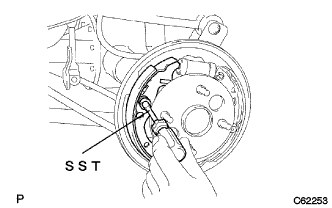

リヤブレーキ 組み付け |
| 1. リヤホイ-ルシリンダカップキット取り付け |
新品のホイールシリンダカップ2個にラバーグリースを塗布し、ホイールシリンダピストン2個にそれぞれ取り付ける。
ホイールシリンダピストン2個にラバーグリースを塗布する。
リヤホイールシリンダコンプレッションスプリングおよびホイールシリンダピストン2個をホイールシリンダボデーに取り付ける。
新品のホイールシリンダブーツ2個をホイールシリンダボデーに取り付ける。
| 2. LH FR OR UPR リヤホイールブレーキ シリンダASSY取り付け |
ボルトで、リヤホイールシリンダASSY LH FR(UPR)を取り付ける。
ユニオンナットレンチ10を使用して、リヤブレーキチユーブNo.４をホイールシリンダボデーに接続する。
| 3. リヤ ドラムブレーキ ブリーダ プラグ仮締め |
| 4. バッキングプレートグリース塗布 |
 |
バッキングプレートとリヤブレーキシューASSYとの接触部に、ノンメルトルブを塗布する。
| 5. リヤブレーキ パーキングブレーキシュー レバーSUB-ASSY LH取り付け |
新品のCワッシャーでパーキングブレーキシューレバーLHをブレーキシュー(リヤ)に取り付ける。
| 6. ブレーキシュー(リヤ)取り付け |
ニードルノーズプライヤを使用して、パーキングブレーキシューレバーLHをパーキングブレーキケーブルNo.3に取り付ける。
 |
SSTを使用して、ブレーキシュー(リヤ)をリヤブレーキシューホールドダウンスプリングカップ、リヤブレーキシューホールドダウンスプリングおよびリヤブレーキシューホールドダウンスプリングピンで取り付ける。
リヤブレーキシューリターンスプリングをブレーキシュー(リヤ)に取り付ける。
| 7. リヤブレーキオートマチックアジャスト レバー LH取り付け |
 |
リヤブレーキオートマチックアジャストレバーLHおよびリヤブレーキオートマチックアジャストレバートーションスプリングをブレーキシュー(フロント)に取り付ける。
| 8. ブレーキシュー(フロント)取り付け |
パーキングブレーキシューストラットセットLHをブレーキシュー(フロント)に取り付ける。
ブレーキシュー(フロント)をリヤブレーキシューリターンスプリングに接続する。
|  |
SSTを使用し、リヤブレーキシューホールドダウンスプリングカップ、リヤブレーキシューホールドダウンスプリングおよびリヤブレーキシューホールドダウンスプリングピンで、ブレーキシュー(フロント)を取り付ける。
SSTを使用し、テンションスプリングをブレーキシュー(リヤ)に取り付ける。
| 9. リヤドラムブレーキ取り付け点検 |

各部品が正常に取り付けられていることを点検する。
| 10. リヤブレーキ ドラム取り付け |
| 11. ブレーキドラムとライニングのすき間調整 |
 |
バッキングプレートのサービスホールからマイナスドライバーでアジャスターを回して拡張させ、ブレーキシューASSYをリヤブレーキドラムに接触させる。
 |
マイナスドライバーでリヤブレーキオートマチックアジャストレバーLHを押しながらもう1本のマイナスドライバーでアジャスターを回して収縮させる。
ブレーキシューASSYがリヤブレーキドラムに接触しなくなった状態から更にアジャスターを1/2回転させて収縮させる。
| 12. ブレーキシステムエア抜き |
ブレーキフルード補充
 |
ブレーキフルードの缶をリザーバの上に逆さにして立てる。
マスタシリンダエア抜き
ユニオンナットレンチ10を使用して、ブレーキチューブ2本をブレーキマスタシリンダASSYから切り離す。
 |
ゆっくりとブレーキペダルを踏み込み、その状態を保持する。
 |
指でチューブ穴をふさぎ、ブレーキペダルを放す。
指を放してゆっくりとブレーキペダルを踏み込んで保持し、再びチューブ穴をふさいでブレーキペダルを放し、これを3、4回繰り返す。
ユニオンナットレンチ10を使用して、ブレーキチューブ2本をブレーキマスタシリンダASSYに接続する。
ブレーキ系統エア抜き
ビニールチューブをブリーダプラグに接続する。
ブレーキペダルを数回踏み込んで、ブレーキペダルを踏んだままブリーダプラグをゆるめる。
ブレーキフルードが出てこなくなった時点で、ブリーダプラグを締め付け、ブレーキペダルをはなす。
ブレーキフルード中のエアの混入がなくなるまで繰り返す。
同様にして、各ホイールのブレーキラインからエアを抜く。
ブレーキフルード量点検
ブレーキフルード量を確認し、必要であればリザーバのMAXの位置までブレーキフルードを補充する。
| 13. ブレーキフルード漏れ点検 |
| 14. リヤタイヤ取り付け |
| 15. パーキングブレーキペダル踏みしろ点検 |
パーキングブレーキペダルをゆっくり踏み、作動音を数える。
| 16. パーキングブレーキペダル踏みしろ調整 |
 |
パーキングブレーキペダルを一度強く踏む。
パーキングブレーキペダルを再度踏み込み、ロックを解除する。
パーキングブレーキペダル部のロックナットをゆるめ、踏みしろが基準値になるようアジャスティングナットを回して調整する。
アジャスティングナットを固定し、ロックナットを締め付ける。
パーキングブレーキペダルを1回以上操作した後、踏みしろを確認する。
パーキングブレーキの引きずりがないことを確認する。
パーキングブレーキペダルを操作したとき、ブレーキインジゲータランプが点灯することを確認する。